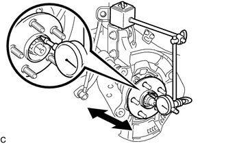
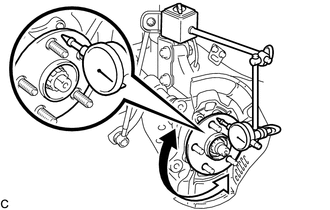

RM3140CG
_52
动力传动系
_023985
车桥和差速器
_0116100
前桥轮毂
G
车桥和差速器 前桥轮毂 车上检查
注意/小心/提示
- 提示：
- ·
右侧操作程序与左侧相同。
·下面程序适用于左侧。
程序

 2.分离前盘式制动器制动钳总成
2.分离前盘式制动器制动钳总成
4.检查前桥轮毂轴承松弛度
a.

使用百分表检查前桥轮毂分总成中心附近的松弛度。
- 最大松弛度:
0.05 mm (0.00196 in.)
- 备注：
- ·
确保百分表垂直置于测量表面。
·百分表的磁铁应远离前轮转速传感器。
- 提示：
-
如果松弛度超出最大值，则更换前桥轮毂分总成。
5.检查前桥轮毂轴向跳动
a.

使用百分表，检查前桥轮毂螺栓外的前桥轮毂分总成表面的轴向跳动。
- 最大轴向跳动:
0.05 mm (0.00196 in.)
- 备注：
- ·
确保百分表垂直置于测量表面。
·确保将百分表的头部固定到前桥轮毂螺栓的外侧。
·百分表的磁铁应远离前轮转速传感器。
- 提示：
-
如果轴向跳动超出最大值，则更换前桥轮毂分总成。
7.安装前盘式制动器制动钳总成